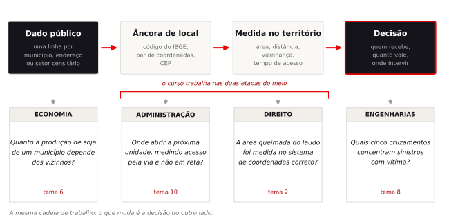

Informação Georreferenciada · apresentação da disciplina
Informação georreferenciada é informação que carrega uma âncora de localização: um par de coordenadas, um código de município, um endereço, o identificador de um setor censitário. Com essa âncora, cada linha de uma tabela passa a ocupar um lugar no território, e tornam-se mensuráveis grandezas que não estavam na tabela — a distância até o equipamento público mais próximo, a área efetivamente atingida por um evento, quantos vizinhos compartilham a mesma condição. Quase todo dado público brasileiro relevante já chega com a âncora pronta. A disciplina trata do que se faz com ela.
Saber que o produto de área queimada do inpe somou 7,2 milhões de hectares no Pantanal em 2020 resolve a manchete. Quem instrui uma ação civil pública precisa saber em quais municípios, em quais meses, e que essa soma conta duas vezes a área que queimou em agosto e voltou a queimar em setembro. O mesmo vale para safra, esgoto, sinistro de trânsito e acesso a hospital: o agregado nacional esconde como o fenômeno se organiza no espaço, e é sobre essa organização que uma política pública ou um contrato de crédito incide.
Crédito rural condicionado ao car do imóvel, perícia de área queimada, definição de perímetro de zeis, escolha de ponto de venda, priorização de obra em cruzamento com vítima: são decisões tomadas com medida feita sobre mapa, e cobradas de quem as assina.

Um indicador cartografado por quatro métodos legítimos de classificação produz quatro mapas honestos que sustentam manchetes opostas. Boa parte do semestre consiste em identificar essas decisões, medir o efeito de cada uma e declarar qual foi adotada.
Dado público brasileiro e software livre. As bases são as malhas territoriais, o Censo 2022 e o sidra do ibge, os produtos de queimada do inpe, o uso e cobertura da terra do MapBiomas, o GeoSampa, o cnes do datasus e o Infosiga sp — todas gratuitas e ainda acessíveis depois do semestre, no estágio e no trabalho de conclusão. O software é o qgis 4.2, com a interface em inglês, porque é nessa língua que estão a documentação, os nomes dos algoritmos e as respostas de fórum a consultar quando algo travar. Não há pré-requisito de sig nem de programação.
Obter um dado público e convertê-lo para GeoPackage com sistema de coordenadas declarado. Medir área e distância sem erro sistemático. Cruzar geometria com tabela e construir um indicador próprio. Produzir um mapa temático cujas escolhas de classificação, paleta e denominador sejam justificáveis. Testar dependência espacial antes de tratar municípios como observações independentes. Reduzir milhares de ocorrências pontuais a uma lista de prioridades. Quantificar mudança de uso da terra sobre imagem classificada. Medir acessibilidade pela rede viária em vez de por círculo. E escrever, ao lado de cada resultado, o que o dado não permite afirmar. A prova final cobra a leitura crítica desses procedimentos, não o caminho dos menus.
A ordem dos temas obedece a pré-requisitos. Medir acessibilidade pela rede viária, no tema 10, exige entender antes por que a distância em linha reta é insuficiente; auditar a classificação de um mapa temático, no tema 4, exige já ter produzido um.
| Tema | Pergunta que orienta o encontro | Conteúdo | Unid. |
|---|---|---|---|
| 1 | Por que dizer onde muda a resposta? | Apresentação da disciplina, instalação do QGIS, tour da interface, primeiras camadas e o projeto salvo em .qgz. | UT 01 |
| 2 | Quantos hectares queimaram de verdade? | Datum, projeção e o erro de 2.394 hectares que nasce de escolher o fuso UTM vizinho. | UT 02 |
| 3 | Quem vive sem esgoto na minha cidade, e em qual quarteirão? | Atributos, junções e consultas sobre setores censitários, e o cruzamento que falha sem emitir aviso. | UT 03 |
| 4 | Este mapa está me convencendo ou me enganando? | Semiologia gráfica e classificação: quatro mapas honestos do mesmo dado, quatro manchetes diferentes. | UT 04 |
| 5 | Onde ainda cabe habitação social perto do metrô? | Sobreposição e proximidade: o raio de 600 metros que decide política habitacional e não vem dos dados. | UT 05 |
| 6 | O que acontece num município depende do vizinho? | Matriz de vizinhança, índice de Moran e LISA aplicados à expansão da soja no MATOPIBA. | UT 06 |
| 7 | Tenho uma lista de endereços. Como ela vira padrão no mapa? | Geocodificação com taxa de erro declarada, e centrografia sobre os focos de fogo do oeste baiano. | UT 07 |
| 8 | Tenho orçamento para intervir em cinco pontos. Quais? | Kernel, DBSCAN e K-means sobre sinistros de trânsito, até virar lista de prioridades. | UT 08 |
| 9 | Quanto do meu município virou pasto desde 1985? | Raster, álgebra de mapas e a matriz de confusão que diz até onde o número é confiável. | UT 09 |
| 10 | Quanta gente chega ao hospital em trinta minutos? | Redes e isócronas, e por que a distância em linha reta é a mentira mais cara do geoprocessamento. | UT 10 |
| 11 | Revisão integradora e prova final | Uma hora percorrendo as dez unidades teóricas com casos-síntese. Uma hora de prova. | — |
| 12 | Banca de projetos e clínica cartográfica | Dez minutos por grupo, com arguição sobre a análise e sobre o mapa. | — |
Cada encontro de 120 minutos se divide em quatro partes. O bloco teórico ocupa a primeira delas e tem duração fixa; quando o tempo aperta, a redução recai sobre o roteiro prático, não sobre a teoria.
| Tempo | Momento | O que acontece |
|---|---|---|
| 40 min | Teoria | A pergunta é enunciada, a resposta ingênua é desmontada e o aparato conceitual é construído. Termina declarando o que a prova pode cobrar daquela unidade. |
| 45 min | Roteiro | Professor e turma em paralelo no QGIS, com pontos de conferência. Ao fim, a pergunta está respondida com número na tela. |
| 15 min | Exercício | Mesma base, um parâmetro alterado. Você descobre que a resposta muda e escreve em três linhas o quanto isso ameaça a conclusão. |
| 20 min | Fechamento | O que se pode e o que não se pode afirmar, discussão aberta, e o anúncio da pergunta seguinte com a leitura de preparação. |
Uma leitura curta antes de cada encontro, de dez a quinze minutos: um capítulo do livro do INPE, um artigo seminal de seis páginas ou uma nota técnica. Ela é anunciada no fim da aula anterior e está ligada à pergunta seguinte, então você lê para conseguir responder algo. Fora isso, o trabalho fora de sala são as três APS e o projeto.
| Peso | Instrumento | Descrição |
|---|---|---|
| 30% | Três APS | Lançadas ao fim dos temas 4, 8 e 10, cada uma com base de dados e pergunta que não apareceram em aula. Feitas fora de sala, entregues pelo Blackboard. A primeira já está publicada: APS 1 · em quais municípios começar a reforma sanitária das escolas. |
| 30% | Prova final | Conceitual. Apresenta um mapa, uma análise ou uma recomendação e pede o diagnóstico do erro metodológico. Cada questão corresponde a uma das dez unidades do programa. O caminho dos menus não é objeto de avaliação. |
| 40% | Projeto em grupo | O grupo formula a própria pergunta territorial e entrega diagnóstico, mapas, webmap e recomendação de uma página. Metade da nota está na formulação da pergunta e na declaração dos limites do que foi medido. |
As três APS e o projeto são entregues com mapa. Para que a correção avalie a análise, e não a diagramação, todas as entregas seguem a mesma especificação de página, elementos obrigatórios e formato de arquivo. A especificação, com a lista de checagem a usar antes de enviar, está em preparar o mapa para entrega, junto com o passo a passo de montagem no QGIS. O enunciado da APS 1, com o sorteio de estado por mês de nascimento, o roteiro em onze passos e a tabela de pesos da correção, está publicado.
As bases abaixo são públicas e de acesso livre, o que permite continuar usando-as depois do semestre. Cada tema tem um pacote no Blackboard, já convertido para GeoPackage e UTF-8, e o roteiro correspondente registra a origem e a data de coleta, de modo que o download pode ser refeito de forma independente.
| Base | Temas | O que se usa |
|---|---|---|
| IBGE · malhas territoriais | 1, 2, 4, 6, 9, 10 | Municípios, unidades federativas e biomas em GeoPackage, SIRGAS 2000 |
| IBGE · Censo 2022 | 3, 5, 10 | Malha de 468 mil setores censitários e agregados por setor |
| SIDRA · API do IBGE | 4, 6 | Produção agrícola municipal, população do Censo e PIB municipal |
| INPE · Programa Queimadas | 2, 7 | Focos de calor e cicatrizes de área queimada do produto AQ1km |
| MapBiomas | 9 | Uso e cobertura da terra em 30 metros, série desde 1985 |
| GeoSampa | 5, 8 | Zoneamento, ZEIS, eixos de estruturação e malha viária de São Paulo |
| CNES · DATASUS | 7, 10 | Estabelecimentos de saúde com coordenadas |
| Infosiga SP | 8 | Sinistros de trânsito com vítimas, georreferenciados |
| OpenStreetMap | 10 | Malha viária do Vale do Ribeira para roteamento, além do mapa base usado em todos os temas |
O programa da disciplina está organizado em dez unidades teóricas, uma por tema, na ordem em que são trabalhadas em sala. Cada unidade reúne os conceitos que tornam a pergunta do tema respondível e independe do software usado para responder. A tabela abaixo também delimita o escopo da prova final: toda questão nasce de uma destas dez unidades, e o escopo de cada uma é declarado ao fim da parte teórica do encontro correspondente.
| UT | Unidade | Conceitos |
|---|---|---|
| 01 | Ciência da geoinformação | Dado espacial e georreferenciado, objetos e campos, vetor e raster, escala e generalização, primeira lei de Tobler |
| 02 | Geodésia e cartografia matemática | Geoide, elipsoide, datum, SIRGAS 2000, conformidade e equivalência, UTM, Albers, EPSG |
| 03 | Modelo vetorial e banco geográfico | Topologia, chave e cardinalidade, junção, predicados topológicos, unidade de análise, MAUP |
| 04 | Cartografia temática | Variáveis visuais de Bertin, taxa e denominador, métodos de classificação, paleta, cartograma |
| 05 | Sobreposição e proximidade | Overlay, buffer, interseção, junção espacial, propagação de erro, parâmetro normativo |
| 06 | Dependência espacial | Matriz de vizinhança, média móvel espacial, Moran global, diagrama de espalhamento, LISA |
| 07 | Processo pontual e centrografia | Aleatoriedade espacial completa, geocodificação, taxa de match, centro médio, elipse de desvio padrão |
| 08 | Densidade e agrupamento | Quadrats, vizinho mais próximo, kernel e largura de banda, DBSCAN, K-means, Gi* |
| 09 | Modelo matricial | Célula e resolução, assinatura espectral, matriz de confusão, álgebra de mapas, estatística zonal |
| 10 | Redes e comunicação | Grafo e impedância, caminho mínimo, isócrona, acessibilidade, hierarquia visual, reprodutibilidade |